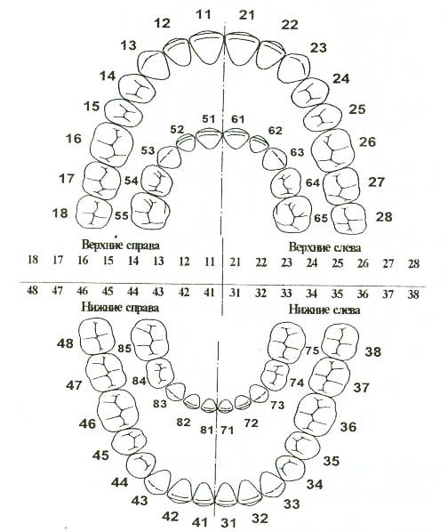
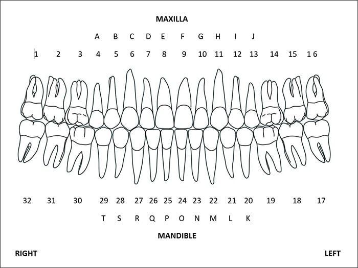

Clínica/Instituição: Sorriso Feliz Odontologia
Dentista Responsável: Dr. Fernando Tártaro
CRO: 45231-SP
Data: 23/08/2025
Nome do Paciente: Chico canino
Idade: 35 anos
Telefone: 4022-8922
Endereço: Av. Sorriso Colgate, nº 101 - Dente de Leite/RJ


Queixa Principal: Dor intermitente no dente 26, principalmente à noite.
Histórico Médico: Paciente hipertenso, faz uso diário de captopril 25mg.
Histórico Odontológico: Tratamento de canal no dente 16 concluído em 2022.
Alergias/Medications: Alergia a dipirona.
Descrição: Sensibilidade no dente 26 e gengiva levemente inflamada na região.
Procedimento: Retirada de dente 26, limpeza local, aplicação de flúor.
Assinatura: Dr. Fernando Tártaro - CRO 45231-SP